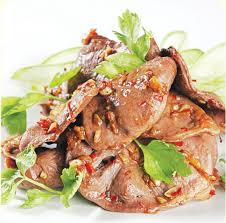

Tim bò nướng cay

- Khẩu phần 4
- Chuẩn bị 15 phút
- Thực hiện 15 phút
Nguyên liệu
- 500g tim bò
- 2 quả dưa leo
- 3 cọng cần tây
- 1 bó que xiên tre
- 1/2 thìa súp hành tím băm
- 1/2 thìa súp tỏi băm
- 1 thìa cà phê ớt hiểm băm
- 1/4 thìa cà phê tiêu xay
- 1 thìa súp tương ớt
- 1/2 thìa súp nước mắm chấm
- 1 thìa cà phê Hạt nêm từ Thịt Thăn, Xương
Ống và Tủy - Bổ sung Vitamin A
Hướng dẫn thực hiện
- Tim bò rửa sạch với muối, để ráo nước, xắt miếng vừa ăn
- Trộn đều hành tím, tỏi, ớt, tương ớt, tiêu, dầu ăn, nước mắm chấm
và Hạt nêm từ Thịt Thăn, Xương Ống và Tủy - Bổ sung Vitamin A, rưới
gia vị lên tim bò, trộn đều, để 20 phút cho thấm gia vị
- Sau đó, xiên vào que, nướng vừa chín trên lửa than hồng
- Dọn ra đĩa, ăn kèm với dưa leo và rau cần